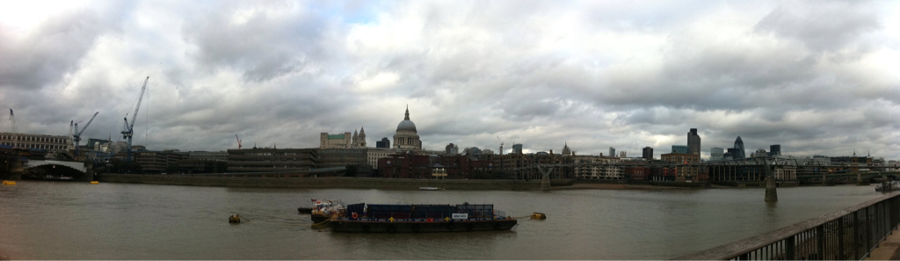

Wed, 05 Oct 2011 18:01:53 · tate · tatemodern · thames · london · museum · travel
view over the river thames from tate modern

View over the river Thames from Tate Modern museum…
Wed, 05 Oct 2011 18:01:53 · tate · tatemodern · thames · london · museum · travel

View over the river Thames from Tate Modern museum…